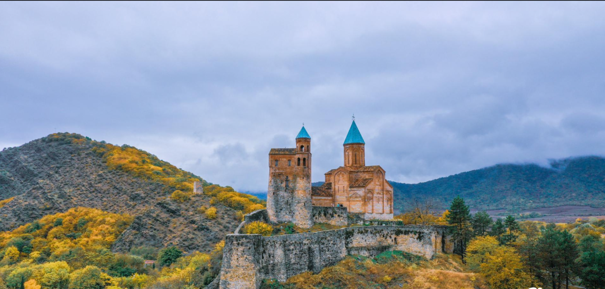
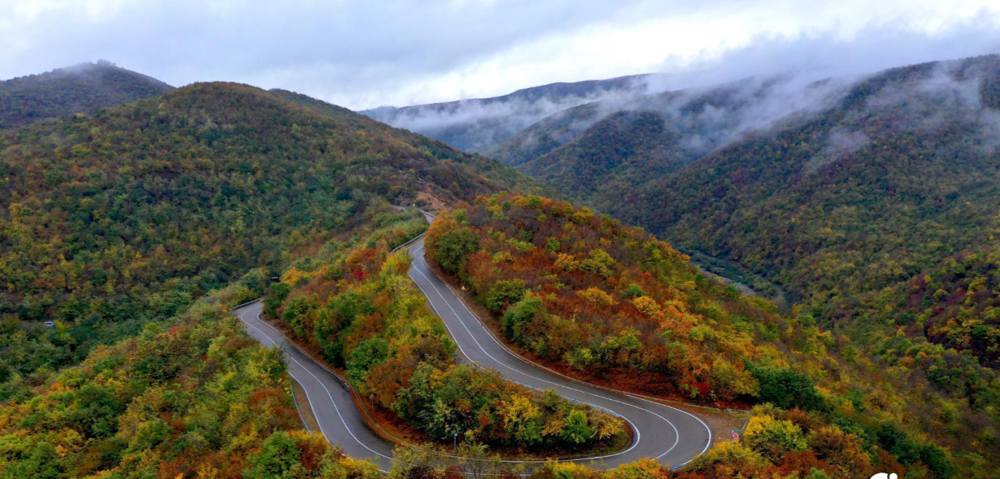

Kakheti is a region located in eastern Georgia, which includes the territories of the historical-geographical provinces of Kakheti, Hereti (partly), and Tusheti. This region is rich in monuments of different periods and diverse nature. Here you will find ancient settlements, distinctive temples, castle towers, beautiful forests, waterfalls, alpine lakes, vast plains, and even a radiant desert. Ancient history, interesting culture, impressive nature, and resorts make Kakheti very attractive for those who want a pleasant vacation and for travel lovers.
Traces of human life in Kakheti date back to the Stone Age. According to the discovered material, people lived permanently in the Stone Age on the territory of Kakheti. Traces of human life here must be defined between 2 million 300 thousand years and 10,000 years BC. In the II and III millennia of the IV millennium BC (Early Bronze Age) the Mtkvari-Araksi culture was widespread on the territory of Kakheti, as well as in the whole central part of the South Caucasus. Kakheti was one of the main places for the spread of Trialeti culture in the Middle Bronze Age. The establishment of Kakheti as a separate territorial unit is attributed to Kakhos, one of the sons of the Georgian ethnarch, Kartlos. In ancient times, Kakheti covered a much smaller area, namely Ertso-Tianeti and Pkhovi, the center of which was Cheleti (Zhaleti). After Kartlos's wife redistributed the territory of Kartli to her sons, Kakho received the above-mentioned borders. But during the same Kakhos period, he ceded to his brother Kukhos the left bank of the Iori River from Lapiankhevi to Bochorma Fortress. From the 4th century, the center of Kakheti was Ujarma, built by King Asfarug. The borders of Kakheti were expanded in the east. By the VIII century, it covered an important part of Kukheti and Hereti. In the 11th century, the city of Telavi became the center of the region. In the XV century, after the disintegration of Georgia, the Kingdom of Kakheti was formed. From that time, the center of Kakheti became Gremi. In the XVI-XVII centuries, Kakheti was separated from the north-eastern part, which today bears the name of Saingilo and is administratively included in Azerbaijan. In the second half of the 17th century, the center of Kakheti moved to Telavi again. The Kingdom of Kakheti existed until the XIX century. Based on the current regional division, historical Kakheti has the status of a territorial-administrative side.
Kakheti is an interesting place in terms of its culture and customs. Kakhetian folklore is noteworthy. Khakhetian folk songs Mravalzhamieri, Tsintskaro, Urmuli, Makruli, and others and well-known. "Chakrulo" was introduced to the world. As it is well known this important sample of Georgian folklore was sent into space. Tush folklore is also a part of the diversity of Kakheti region. Many public or religious holidays are celebrated in Kakheti, such as Alaverdoba, Iliaoba, Gremkalakoba, Erekleoba, Pirosmanoba, and others. Alaverdoba is an ancient holiday. It consisted of separate remarkable holidays, starting from the day after the Feast of the Cross ( Jvartamagleba ) and lasting three weeks. This holiday is also associated with some pre-Christian beliefs. During the holiday a market and several events were held in Alaverdi, people from different angles and faiths visited the Alaverdi temple. The celebration had its specific ritual ending. 200-300 horsemen used to gather in the Alaverdi yard and surround the Alaverdi temple while singing "Dalai" (Georgian folk funeral poem-song) for the souls of those killed in the war. Tush holidays should also be noted, during which you will be able to taste the delicious traditional cuisine and get acquainted with interesting traditions.  As for the clothing, the Kakhetian Chokha is long, with the knees bent, with a wedge-shaped opening around the chest to make the Akhalukh appear. It was worn largely unbuttoned, the sleeves extended to the wrist, and often worn rolled up. Georgian, Dagestani, and Ossetian shawls were used to sew Chokhi, mainly black, chestnut-colored, and blue. Tush embroidered clothes with colorful ornaments are undoubtedly uniquely beautiful. Kakheti is also known for its exceptional cuisine. Meat dishes are especially popular here. Traditional dishes are Mtsvadi (barbecue) fried on tsalami, khashlama, chakafuli, chikhirtma, and others. In Tusheti, dairy products and related dishes are common with meat. Tush cuisine is famous for Khinkali, Mtsvadi, Choban (Shepherd Kaurma), Khmiadi (ritual triangular bread), Gordila, Kumeli, Kotori, Khavitsi, Mosmula, and others. Tushuri Gudi cheese is well known, the cheese is made in a sheepskin bag. Different types of tea are also common here. It is impossible to talk about Kakhetian cuisine and not be reminded of Kakhetian wine. Kakheti is a wine country, it occupies a special place in the production of Georgian wine. About 200 wine varieties are described in this region. Especially popular varieties are Rkatsiteli, Kakhetian Mtsvane, Khikhvi, Kisi, and Saperavi.
Kakheti is located in Eastern Georgia. It is bordered by Kartli to the west, the Russian Federation (Dagestan) to the north, from which it is separated by the Caucasus Mountains, and Azerbaijan to the south. Kakheti region includes the inner and lower reaches of the Iori River and the Alazani River basin. Separate parts of Kakheti are called Garekakheti (middle year of the river Iori), Kiziki (between the lower reaches of the river Ivri and Alazani), Shiga Kakheti (right bank of the river Alazani), and Gaghmakhari (left bank of the river Alazani). Kakheti Caucasus, which runs down the steep slopes of the Alazani Plain, is amazingly beautiful. Kakheti is connected to Tusheti by the Abano Pass on the Caucasus ridge. The territory of the region includes Vashlovani National Park, Tusheti National Park, Ilto  Reserve, Korugi Reserve, Lagodekhi Reserve, Iori Reserve, and Chachuni Reserve. Nature is very diverse in this area, with semi-deserts, evergreen forests, plains, meadows, and even subalpine vegetation. Alazani Valley has a moderate subtropical climate. Here the average is 0 in winter and 23-25 in summer. Outside Kakheti (Iori plateau, mountains in front of Gombori and Yalno ridges) has a dry subtropical climate. Average temperature in winter 0- -2.3, summer - 23-25. The weather is relatively cold on the Tsivgombori ridge. The lowest point of the region is Eldar plain (90-150 m above sea level), and the highest is Tebulo mountain (4493 m). Kakheti consists of 8 administrative units, namely the municipalities of Akhmeta, Gurjaani, Dedoplistskaro, Telavi, Lagodekhi, Sagarejo, Sighnaghi, and Kvareli. The administrative center of the region is the city of Telavi.
Kakheti, with its centuries-old culture, is very rich in monuments of different periods. Here you will find ancient settlements, interesting and distinctive medieval temples, which were also important cultural and educational centers, impressive castles, Tush towers, and slate houses, etc. This region is also unique and diverse in terms of nature. There are many waterfalls and rolling lakes hidden in cool greenery in Kakheti. In this region, you will meet a completely different landscape from other regions of Georgia. Kakheti is exotic by the isolated, colorful desert and mud volcanoes of Vashlovani reserve.